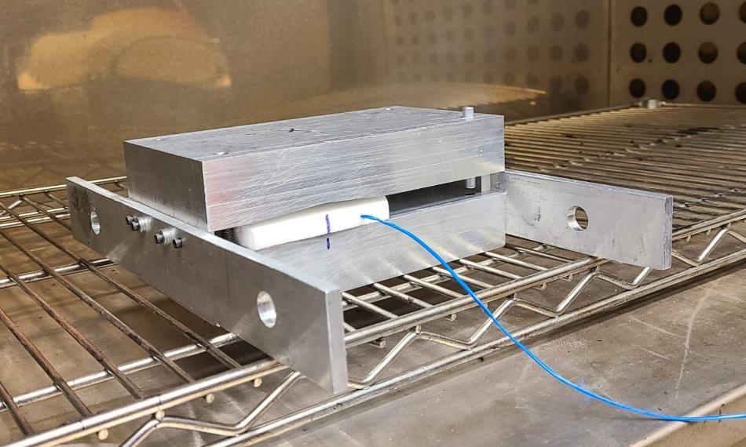
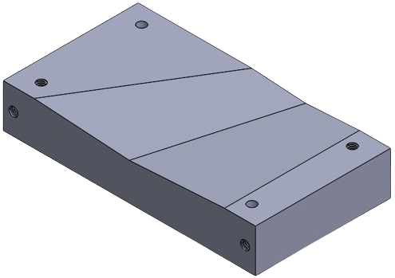
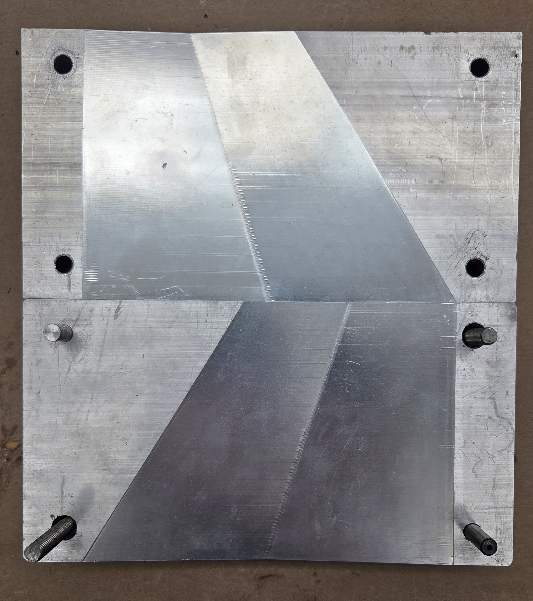
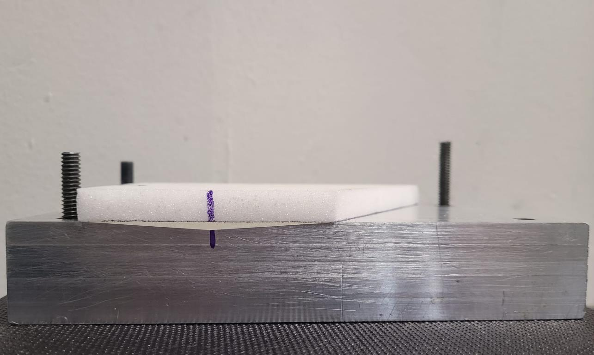
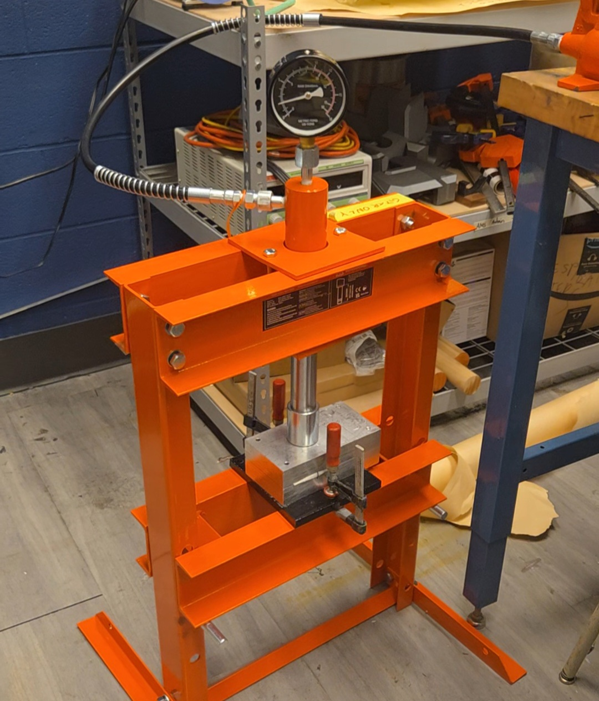
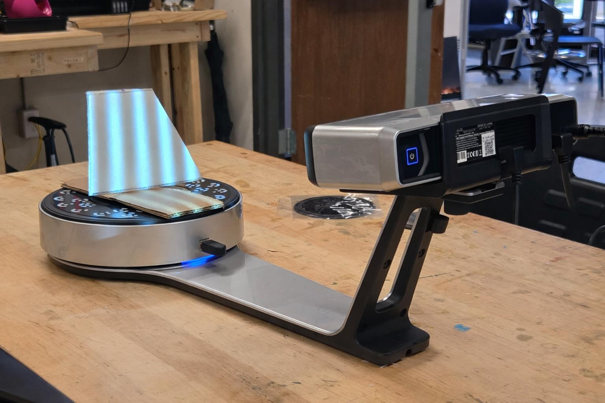
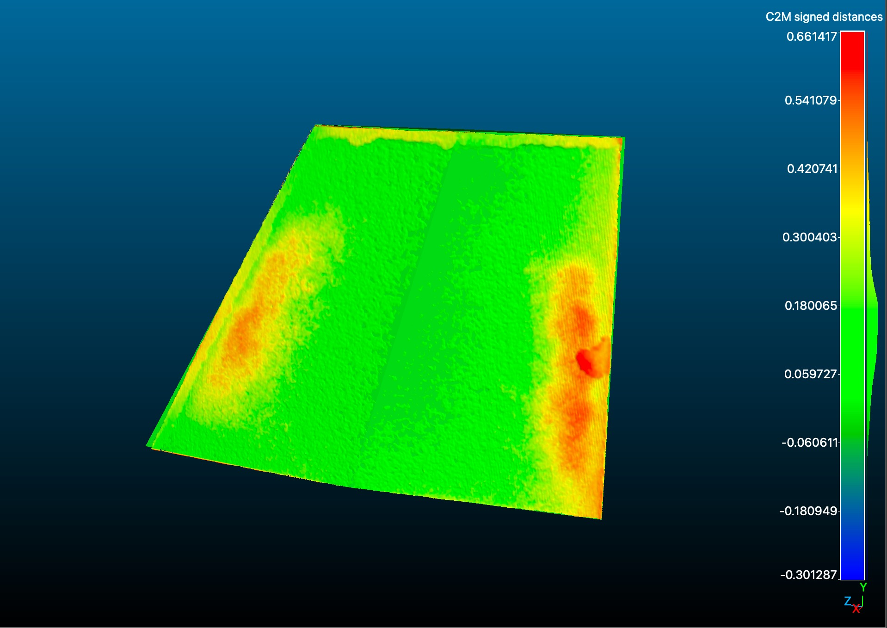

GTXR / Materials and manufacturing
Thermoforming foam fin cores
Developing and evaluating a thermoforming process for double-wedge PMI foam fin cores.


Manufacturing objective
Complex double-wedge fin cores are difficult to manufacture from low-density materials. I co-developed and evaluated a thermoforming process using CNC-machined aluminum tooling. The study assessed manufacturing feasibility for a future core option, rather than documenting a flown fin design.
Mold geometry and hardware
A two-part aluminum mold defined the double-wedge geometry. Dowel alignment located the mold halves during forming.




Heat, form, and cool
The foam and mold were preheated with thermocouple monitoring. At the target forming temperature of 195EC, the mold halves were closed and transferred to a hydraulic press. The assembly remained under pressure while cooling.




Measure against the CAD geometry
The formed cores were scanned and compared with the nominal CAD geometry. Caliper measurements provided an additional dimensional check.




Measured geometry
0.28 mm
Average global geometric error across five formed cores, reported in the paper.
Lateral movement during transfer and localized out-of-plane deformation identified where mold constraints and process control needed refinement.
Publication
Co-author and presenter, AIAA Regional Student Conference Proceedings, 2026.
Viability of Thermoformed Closed-Cell Foam Cores for Carbon Fiber Sandwich Rocket Fins
AIAA 2026-112793
Process photographs, CAD, and metrology figures reproduced from the supplied paper and conference presentation.